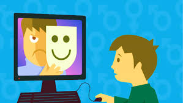
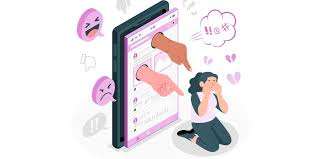
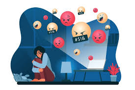
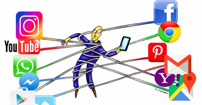
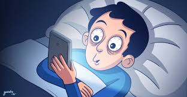
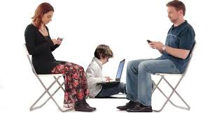

Riesgos
El impacto negativo puede incluir la afectación a la salud mental, como ansiedad y depresión,
la exposición al ciberacoso, la adicción, la distorsión de la imagen corporal
y la falta de sueño.
También pueden generar problemas como el aislamiento social y la procrastinación,
ya que desvían el tiempo de actividades importantes, como el ejercicio y la interacción
cara a cara.

Salud mental:
Aumento de la depresión y ansiedad, especialmente al compararse con vidas idealizadas de otros, también puede disminuir la autoestima debido a la comparación constante y la presión por cumplir estándares poco realistas sobre la apariencia, y mayor riesgo de sufrir ciberacoso, lo que puede tener efectos graves en la salud mental.
El ciberacoso
El ciberacoso es el uso de tecnologías digitales como teléfonos, computadoras o redes sociales para acosar, amenazar, avergonzar o intimidar a otra persona. Puede incluir enviar mensajes crueles, difundir rumores, publicar fotos o videos vergonzosos, o crear cuentas falsas para difamar a alguien. Sus efectos en las víctimas pueden incluir estrés, ansiedad, y aislamiento.
- Difusión de información privada:
- Suplantación de identidad:
- Acoso en juegos:
- Ciberflashing o ciberexhibicionismo:
¿Cómo se manifiesta?
Compartir fotos, videos o datos personales vergonzosos de alguien en redes sociales o en internet.
Crear perfiles falsos para publicar comentarios hirientes en nombre de otra persona.
Utilizar las plataformas de juegos en línea para intimidar o amenazar a otros jugadores.
Enviar imágenes o videos de contenido sexual no solicitado y sin consentimiento.

Adicción a las Redes Sociales
La adicción a las redes sociales es el uso compulsivo e incontrolable de plataformas digitales que interfiere negativamente con la vida diaria de una persona. Se caracteriza por la pérdida de control, el descuido de responsabilidades y síntomas como ansiedad, estrés, falta de concentración y problemas de sueño. Este trastorno se debe a que las redes sociales activan el sistema de recompensas del cerebro, liberando dopamina de forma similar a las drogas.

- Uso incontrolable:
- Compulsión:
- Deterioro funcional:
- Ansiedad y estrés:
- Aislamiento social :
- Problemas de salud física:
Síntomas
Incapacidad para limitar el tiempo en redes sociales a pesar de las consecuencias negativas.
Sentir una necesidad incontrolable de estar conectado, revisar notificaciones o saber qué hacen los demás (FOMO).
Descuido de responsabilidades diarias, trabajo, estudios o relaciones sociales en la vida real.
Experimentar irritabilidad o ansiedad al estar desconectado.
Preferir las interacciones en línea sobre las interacciones cara a cara.
Fatiga, dolores de cabeza, problemas de sueño y sedentarismo.
Cómo combatirla
- Establecer límites:
- Desactivar notificaciones:
- Fomentar actividades alternativas:
- Priorizar el sueño:
- Fomentar la comunicación real:
Fijar horarios específicos para usar las redes sociales y limitar el tiempo de uso diario.
Evitar las interrupciones constantes que incitan a revisar las aplicaciones.
Dedicar tiempo a hobbies, deportes, lectura u otras actividades fuera del mundo digital.
No usar dispositivos antes de dormir para no alterar los ciclos de sueño.
Pasar tiempo de calidad con amigos y familiares en persona.
La distorsión de la imagen corporal
es una percepción inexacta o exagerada del propio cuerpo, en la que la imagen que uno tiene de sí mismo no coincide con su apariencia real. Se diferencia de la simple insatisfacción corporal, ya que la persona no solo se siente mal con su cuerpo, sino que lo ve de una manera alterada o incluso con defectos inexistentes.
Los problemas de sueño por las redes sociales
se deben a la luz azul que emiten las pantallas, la cual suprime la melatonina, y a los efectos psicológicos del contenido, como la ansiedad por la competencia social y el "miedo a perderse algo", que dificultan conciliar el sueño y pueden causar insomnio digital.
- Luz azul:
- Impacto psicológico:
- Ansiedad y estrés:
- FOMO (Miedo a perderse algo):
- Salud mental:
- Interrupciones:
La exposición a la luz azul de los dispositivos electrónicos interfiere con el ritmo circadiano natural, haciendo que el cerebro crea que aún es de día y retrasando la liberación de melatonina, la hormona del sueño.
Ver contenido que genera preocupación, enojo o envidia puede impedir la relajación mental necesaria para dormir.
La necesidad de estar conectado puede generar un estado de alerta constante y dificultar la desconexión.
El uso excesivo se relaciona con la depresión y la ansiedad, condiciones que a su vez afectan negativamente la calidad del sueño.
Las notificaciones constantes (sonidos, vibraciones) pueden interrumpir el sueño, incluso después de haberse dormido, lo que reduce la calidad del descanso profundo.
El aislamiento social
puede ser causado por el uso excesivo de las redes sociales, ya que la cantidad de interacciones en línea no siempre equivale a una calidad significativa. Las redes sociales pueden llevar a una sensación de desconexión, reemplazando las interacciones reales con interacciones virtuales superficiales que a menudo carecen de vínculos emocionales profundos y empatía genuina. Esto se puede manifestar como una sensación de no pertenecer o de soledad, incluso cuando se está rodeado de muchas conexiones en línea.
- Sustitución de interacciones reales:
- Superficialidad de las interacciones:
- Comparación social:
- Adicción y pérdida de tiempo:
Cómo las redes sociales contribuyen al aislamiento social
El tiempo que se pasa en redes sociales puede reducir las interacciones cara a cara con amigos, familiares y la comunidad, lo que limita la conexión emocional profunda.
Los "me gusta", comentarios breves y reacciones con emojis pueden crear una ilusión de conexión, pero no reemplazan la profundidad de los vínculos emocionales genuinos.
La constante exposición a imágenes y vidas "curadas" puede provocar ansiedad, baja autoestima y una distorsión de la realidad, lo que lleva a una sensación de no ser suficiente y aumenta el aislamiento.
El uso excesivo puede llevar a una adicción que consume tiempo y resta importancia a otras actividades importantes para el bienestar emocional, como pasar tiempo en persona o descansar.
Procrastinación por las redes sociales
Utilizar nuestro teléfono inteligente nos permite llenar vacíos de tiempo, es un escape de nuestros pensamientos y nos facilita interactuar con personas o realidades alternativas. Nada de ello debiera resultar negativo, a no ser que nos lleve a la procrastinación de nuestras actividades personales o académicas. La procrastinación académica se caracteriza por una tendencia irrazonable al retraso en el inicio o en la finalización de tareas académicas que sabemos debemos realizar, como escribir un ensayo, estudiar para un examen, realizar una lectura, etc. Se ha demostrado que el uso excesivo del teléfono móvil se asocia a mayor procrastinación académica. Esto conlleva a un bajo rendimiento escolar y puede acarrear alteraciones psicológicas, como autoculpa y baja autoestima, además de producir ansiedad por dependencia del teléfono móvil.
Problemas de privacidad
- Robo de identidad y fraude:
Los principales problemas de privacidad en las redes sociales incluyen el robo de identidad, el acoso cibernético, la exposición de información personal sensible, la difusión de datos a terceros sin consentimiento y el uso de la ubicación para fines maliciosos. Estos riesgos se derivan de una mala configuración de privacidad, contraseñas débiles y compartir información en exceso.
Problemas de privacidad comunes
Los estafadores pueden usar la información que compartes para suplantar tu identidad, abrir cuentas bancarias o tarjetas de crédito a tu nombre, o cometer fraudes empresariales.